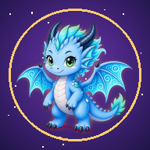

Starblade Academy Privacy Policy
Effective November 20, 2026
Starblade Academy is a learning game for children (math, reading, writing, drawing, geography and a pet dragon that grows as you practice). It is built to collect no personal information at all.
What we collect
Nothing. The app has no accounts, no sign-in, no ads, no analytics, no tracking, no third-party SDKs and no in-app purchases. We do not collect, store, share or sell any information about children or adults.
What stays on your device
Progress (an explorer's first name or nickname, stardust, stickers, stories, sketches, reading-log entries and settings) is saved only in the app's local storage on the device that is being used. It is never sent to us or to anyone else. Each device keeps its own progress.
A grown-up can choose to save a backup file to the device and open it on another device. That file stays wherever the grown-up puts it; the app does not upload it.
Network use
The app only downloads its own files (pictures, fonts and code) from the site it is installed from, so it can update and work offline. It makes no other network requests. Read-aloud uses the voices built into the device.
Children's privacy (COPPA and GDPR-K)
Because no personal information leaves the device, we do not knowingly collect personal information from children under 13 (or under 16 where that applies). There is nothing for us to review, export or delete. To erase everything, a grown-up can use Grown-up Corner → Reset in the app, or delete the app or the browser's site data.
Grown-up area
Settings, backups and explorer management sit behind a grown-up hold-to-open gate. There are no links out of the app to websites, stores or social media for children to follow.
Changes
If this policy ever changes, the new version will be posted on this page with a new effective date. We will not start collecting data without updating this policy first.
Contact
Questions: see For Parents for how to install, save, and move progress.